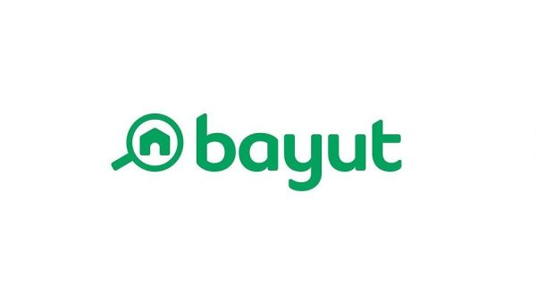

Workplace Safety Risk Intelligence Platform
Built an AI-powered decision support system to predict workplace accident
severity and assess safety risk using historical industrial accident data
and deep learning models.
GitHub
Hospital Admission Analytics & Predictive Modeling Platform
Developed a production-ready healthcare analytics platform combining data
engineering, feature engineering, machine learning models, and interactive
Streamlit dashboards for predictive insights.
GitHub
Real-Estate Fair Value & Overpricing Predictor
Built an uncertainty-aware machine learning system to estimate fair property
value, confidence intervals, and overpricing risk using tree-based models
and quantile regression.
GitHub
PySpark Analysis for Better Fraud Detection with Gradient Boosting
Implemented scalable fraud detection using PySpark for distributed data
preprocessing and feature engineering, followed by Gradient Boosting
classification and model evaluation.
GitHub
German E-Commerce Customer Behaviour Analysis
Analyzed a 100,000-row German e-commerce dataset to uncover customer behavior,
product performance, return trends, and seasonal purchasing patterns using EDA.
GitHub

Netflix Content Analysis using MySQL
Performed end-to-end SQL-based analysis of Netflix movies and TV shows to
identify genre dominance, regional trends, rating distributions, and
time-based content patterns.
GitHub
Statistical Analysis of International T20 Cricket Batting Performance
Conducted a pure statistical and exploratory analysis of international T20
batting data using descriptive statistics, hypothesis testing, and
visualization to uncover performance patterns.
GitHub
Fraud Transaction Analysis using MongoDB (NoSQL) & Python ETL
Built a fraud analytics workflow using MongoDB aggregation queries and Python
ETL pipelines to analyze large-scale financial transactions and detect
suspicious behavior patterns.
GitHub
Retail Business Sales Analysis Using SQL and Tableau
Analyzed retail transaction data using SQL and created interactive Tableau
dashboards to visualize sales trends, customer behavior, and product
performance.
GitHub
A NoSQL-Based Framework for Music Data Storage and Analytics Using MongoDB
Designed a scalable MongoDB-based analytics framework to explore large-scale
Spotify music data using advanced aggregation pipelines.
GitHub

Customer Churn Prediction Dashboard
Built an end-to-end churn prediction system for an OTT platform combining
synthetic data generation, machine learning models, and a Streamlit-based
interactive dashboard.
GitHub

Bayut Property Sales Intelligence
Performed real-estate market analysis on Bayut property listings using SQL
and Python, followed by advanced visual analytics and dashboards in Tableau.
GitHub
IBM HR Analytics Dashboard
Developed a Tableau dashboard using the IBM HR Employee Attrition dataset
to analyze workforce demographics, compensation, experience, and attrition
patterns for HR decision-making.
GitHub
World’s Finest Restaurants – Global Insights Dashboard
Created a Tableau dashboard analyzing global fine-dining trends across elite
restaurants, focusing on pricing, ratings, cuisines, chefs, and geographic
distribution.
GitHub